Настоящая инструкция описывает полный порядок действий, необходимых для того, чтобы сотрудник, не имеющий специальной подготовки в администрировании серверов, самостоятельно арендовал в облаке Intelion Cloud сервер с графическими процессорами, установил на него движок Strata с одной из двух поддерживаемых моделей и получил работающий программный интерфейс, совместимый с OpenAI. Каждый шаг проверен на практике: сервер был создан, движок развёрнут, а интерфейс проверен запросами извне. Иллюстрации представляют собой снимки экрана, сделанные в ходе этого развёртывания, и протоколы работы терминала. Отдельный раздел объясняет, в каких случаях достаточно одной видеокарты, а в каких следует брать две, и как число видеокарт связано с количеством одновременно обрабатываемых запросов к нейросети.
Инструкция предназначена для сотрудников, которым необходимо получить собственный сервер нейросети с программным интерфейсом, совместимым с OpenAI, без обращения к внешним платным сервисам языковых моделей. Документ охватывает весь жизненный цикл такого сервера: выбор конфигурации, оплату и создание виртуальной машины в облаке Intelion Cloud, подключение к ней, установку движка Strata и модели, проверку работы, повседневное управление, остановку и освобождение ресурсов.
Порядок действий одинаков для сотрудников, работающих на компьютерах под управлением Windows, macOS и Linux. Все действия на сервере выполняются либо в веб-терминале, открываемом прямо в браузере из личного кабинета Intelion, либо через стандартную программу ssh, которая входит в состав Windows 10 и Windows 11, macOS и Linux. Устанавливать на рабочий компьютер дополнительные программы и создавать ключи SSH не требуется.
Инструкция составлена для комплекта развёртывания strata_deploy версии v1.1.0. Номер версии является единственным, что нужно знать о комплекте: он указывается в команде скачивания (раздел 8.1), показывается сценарием при запуске и записывается на сервер, поэтому по нему всегда можно понять, что именно установлено (раздел 8.5). Если для работы выпущена более новая версия, в командах этой инструкции достаточно заменить v1.1.0 на её номер; порядок действий при этом сохраняется, хотя отдельные сообщения программ могут отличаться от приведённых на рисунках.
| Термин | Определение |
|---|---|
| API (Application Programming Interface) | Программный интерфейс приложения; в данной инструкции означает интерфейс сервера нейросети, к которому обращаются клиентские программы по протоколу HTTP по адресу вида http://АДРЕС:18080/v1. |
| GPU (Graphics Processing Unit) | Графический процессор, то есть видеокарта. Модель нейросети выполняется главным образом на видеокарте. |
| VRAM (Video Random Access Memory) | Память видеокарты. У Tesla A10 её объём составляет 24 ГБ, из которых программам доступно около 22,5 ГиБ. |
| RAM (Random Access Memory) | Оперативная память сервера. Движок Strata хранит в ней часть модели, не поместившуюся в память видеокарты. |
| vCPU (virtual Central Processing Unit) | Виртуальное ядро центрального процессора, выделяемое облаком виртуальной машине. |
| CUDA (Compute Unified Device Architecture) | Программная платформа NVIDIA для вычислений на видеокартах. CUDA Toolkit содержит компилятор, необходимый для сборки движка. |
| SSH (Secure Shell) | Защищённый протокол удалённого доступа к командной строке сервера. |
| VNC (Virtual Network Computing) | Протокол удалённого доступа к экрану компьютера. Веб-терминал Intelion является консолью VNC, открываемой в браузере. |
| Strata | Движок для запуска языковых моделей на основе llama.cpp, который предоставляет API, совместимый с OpenAI, умеет распределять запросы между несколькими копиями модели и держать часть модели в оперативной памяти. |
| Реплика | Отдельная копия модели, запущенная на одной видеокарте. На сервере с двумя видеокартами работают две реплики, а единый API распределяет между ними запросы. |
| Токен | Единица текста, которой оперирует модель; в среднем одно русское слово занимает два-три токена. |
| Контекст | Наибольший объём текста в токенах (запрос, история диалога и ответ), который модель учитывает одновременно. |
| Ключ API | Секретная строка вида sk-strata-…, без которой сервер отклоняет запросы. Передаётся в заголовке Authorization: Bearer КЛЮЧ. |
| systemd | Подсистема Linux, управляющая службами. Сервер нейросети работает как служба strata с автоматическим запуском при включении машины. |
Решение состоит из трёх частей. Первая часть, облачный сервер Intelion Cloud, предоставляет виртуальную машину с операционной системой Ubuntu 24.04, драйвером NVIDIA и установленным CUDA Toolkit. Вторая часть, комплект развёртывания strata_deploy, хранит в себе исходный код движка Strata и библиотеки llama.cpp, поэтому при установке они ниоткуда не скачиваются и не зависят от изменений в сторонних репозиториях. Из интернета загружаются только пакеты Python и файлы самой модели с Hugging Face. Третья часть, интерактивный сценарий deploy.sh, задаёт несколько вопросов, проверяет сервер, собирает движок под установленные видеокарты, скачивает и проверяет модель, создаёт службу strata и в завершение проверяет API.
Комплект поддерживает две модели, сведения о которых приведены в таблице 2. Обе модели относятся к классу смеси экспертов: из всего множества параметров при обработке каждого токена работает лишь небольшая часть, поэтому модель на десятки миллиардов параметров отвечает с приемлемой скоростью на видеокарте с 24 ГБ памяти, а не поместившиеся в видеокарту эксперты хранятся в оперативной памяти сервера.
| Параметр | Qwen3.6-35B-A3B | Qwen3.8-Flash-Next |
|---|---|---|
Номер в меню deploy.sh | 1 (по умолчанию) | 2 |
| Всего параметров | 35 млрд, из них около 3 млрд активных на токен | 125 млрд |
| Вариант сжатия | UD-Q4_K_XL (Unsloth) | IQ3_XXS (GSQ-RCO, ISTA-DASLab) |
| Объём скачивания | около 23 ГБ | около 76 ГБ |
| Место на диске (с движком и CUDA) | около 55 ГиБ | около 180 ГиБ |
| Оперативная память на две реплики | около 64 ГиБ | около 96 ГиБ |
| Имя модели в API | qwen3.6-35b-a3b | qwen3.8-flash-next |
| Дополнительное имя | qwen3.6-35b-a3b-ud-q4_k_xl | qwen3.8-flash-next-iq3_xxs |
| Когда выбирать | Быстрые ответы, агенты, вызов инструментов, умеренная нагрузка | Более сложные задачи рассуждения, когда качество важнее скорости |
Запрос, в котором указано другое имя модели, сервер отклоняет, поэтому в настройках клиентских программ в поле model следует указывать именно постоянное имя из таблицы 2. Обработка изображений в данном комплекте отключена.
Важно: сервер держит одну модель за раз. На сервере одновременно работает только одна из двух моделей, а все видеокарты отданы её репликам. Выбор модели в сценарии deploy.sh не добавляет вторую модель к первой, а заменяет её: служба strata перезапускается с новой моделью, и прежнее имя модели перестаёт приниматься API. Скачанные файлы прежней модели и собранный движок остаются на диске, поэтому обратное переключение занимает несколько минут (раздел 10). Если обе модели нужны одновременно, следует арендовать два сервера.
Комплект запускает на каждой видеокарте собственную полную копию модели, называемую репликой. Реплики не делят модель между собой: каждая из них самостоятельно отвечает на запросы, а единый API принимает все входящие запросы на одном порту и распределяет их между репликами. Каждая реплика обрабатывает одновременно до четырёх запросов (параметр PARALLEL=4). Следовательно, количество одновременно обслуживаемых запросов растёт прямо пропорционально числу видеокарт: сервер с одной видеокартой обслуживает до четырёх запросов одновременно, а сервер с двумя видеокартами до восьми. Запросы сверх этого числа не теряются, а ожидают в очереди, пока освободится место в одной из реплик.
При распределении учитывается и то, что реплика уже держит в памяти начало запроса. Если несколько агентов используют одинаковый длинный системный промпт, повторно его обрабатывать не нужно, и выгодно направлять такие запросы на ту же реплику. Однако при стандартной настройке все такие запросы скапливались на одной реплике, а вторая простаивала. Поэтому комплект устанавливает параметр replica_load_tokens равным 20000: реплика считается загруженной раньше, и запросы равномернее расходятся по видеокартам. Значение установлено замерами модели Flash-Next на трёх видеокартах A10.
Одной видеокарты Tesla A10 достаточно, если сервер нужен одному-двум сотрудникам, для проверки и отладки интеграции, для разовой обработки документов либо для агента, который отправляет запросы последовательно, по одному. В этом случае подходит модель Qwen3.6-35B-A3B: ей хватает конфигурации 1x Tesla A10, 64 ГБ DDR4 и диска 128 ГБ. Скрипт сам определит количество видеокарт и запустит одну реплику. Одна видеокарта обходится примерно вдвое дешевле двух (около 39 ₽ в час против 86 ₽ в час на момент составления инструкции). Кроме того, конфигурации с одной A10 обычно есть в наличии, тогда как конфигурации с двумя бывают в дефиците.
Модель Qwen3.8-Flash-Next на одной видеокарте возможна только в конфигурации 1x Tesla A10, 64 ГБ DDR4 с диском 256 ГБ: одна реплика этой модели закрепляет за собой около 40 ГБ оперативной памяти, и ещё около 16 ГБ нужно системе, поэтому конфигурации с 32 ГБ недостаточно. Запас памяти в этом случае невелик, а скорость одного запроса ниже, чем у Qwen3.6-35B-A3B (таблица 5), поэтому для одной видеокарты рекомендуется Qwen3.6-35B-A3B.
Две видеокарты следует выбирать, если к серверу одновременно обращаются несколько сотрудников или программ: например, работает команда, подключено несколько агентов, ведётся пакетная обработка документов в несколько потоков. Важно понимать, что вторая видеокарта не ускоряет ответ на отдельный запрос, поскольку каждый запрос целиком обрабатывается одной репликой. Вторая видеокарта удваивает пропускную способность, то есть число запросов, обрабатываемых одновременно, и уменьшает время ожидания в очереди при нагрузке. Кроме того, две видеокарты с конфигурацией на 128 ГБ оперативной памяти позволяют запустить модель Qwen3.8-Flash-Next в двух репликах.
| Сценарий | Конфигурация | Диск | Модель | Одновременных запросов |
|---|---|---|---|---|
| Проверка, один-два пользователя, последовательные запросы | 1x Tesla A10, 64 ГБ DDR4, 18 vCPU | 128 ГБ | Qwen3.6-35B-A3B | до 4 |
| Команда, несколько агентов, параллельная обработка | 2x Tesla A10, 128 ГБ DDR4, 38 vCPU | 128 ГБ | Qwen3.6-35B-A3B | до 8 |
| Сложные задачи, качество важнее скорости | 2x Tesla A10, 128 ГБ DDR4, 38 vCPU | 256 ГБ | Qwen3.8-Flash-Next | до 8 |
| Обе модели поочерёдно на одном сервере (конфигурация, на которой выполнена проверка данной инструкции) | 2x Tesla A10, 128 ГБ DDR4, 38 vCPU | 256 ГБ | обе | до 8 |
Быстродействие модели Qwen3.6-35B-A3B было замерено на развёрнутом сервере с двумя Tesla A10. Клиент отправлял одновременно 1, 4, 8 и 16 запросов; каждый запрос требовал ответа длиной 300 токенов при отключённых рассуждениях. Результаты приведены в таблице 4. Скорость указана в токенах в секунду: одна тысяча токенов соответствует примерно 400–500 русским словам.
| Одновременных запросов | Общая скорость, токенов/с | Скорость одного запроса, токенов/с | Время до получения последнего ответа, с |
|---|
Замер подтверждает описанную выше модель работы. Пока число одновременных запросов не превышает восьми мест (по четыре на каждой видеокарте), общая скорость растёт: при восьми запросах сервер выдаёт в 4 раза больше текста в секунду, чем при одном, а каждый отдельный запрос замедляется умеренно, с 54 до 29 токенов в секунду. При шестнадцати запросах общая скорость почти не растёт (225 против 215 токенов в секунду), а время ожидания удваивается: восемь запросов обрабатываются, а восемь ждут в очереди. Сервер с одной видеокартой имеет четыре места, поэтому его предел наступает уже на четырёх одновременных запросах, а общая скорость под нагрузкой составляет примерно половину от показанной в таблице 4.
Для практических расчётов это означает следующее. Короткий ответ чат-бота (100–300 токенов без рассуждений) приходит за 2–6 секунд. Сервер с двумя A10 под непрерывной нагрузкой выдаёт около 200 токенов в секунду, то есть порядка 700 тысяч токенов в час. Этого достаточно для команды из 10–20 сотрудников, работающих в чате с паузами между запросами, либо для 6–8 агентов, непрерывно отправляющих запросы. С включёнными рассуждениями (по умолчанию) модель перед ответом пишет рассуждение длиной от сотен до нескольких тысяч токенов, поэтому ответ на простой вопрос занимает 10–20 секунд вместо одной-двух (раздел 9).
Модель Qwen3.8-Flash-Next на этом сервере не устанавливалась, поэтому её показатели в таблице 5 являются оценкой. Оценка основана на замерах, опубликованных в документации Strata для того же варианта сжатия IQ3_XXS на видеокартах сходного класса (62 токена в секунду на RTX 5070 12 ГБ, 26–35 токенов в секунду на RTX 3060 12 ГБ, 78 токенов в секунду суммарно при четырёх запросах на двух RTX A4000 16 ГБ), и на замере Qwen3.6-35B-A3B на A10 из таблицы 4. Flash-Next в 3,5 раза больше по числу параметров, держит большую часть экспертов в оперативной памяти и поэтому отвечает медленнее.
| Показатель | Qwen3.6-35B-A3B (замер) | Qwen3.8-Flash-Next (оценка) |
|---|---|---|
| Скорость одного запроса | 54–70 токенов/с | 30–45 токенов/с |
| Общая скорость при 8 одновременных запросах | 215 токенов/с | 100–160 токенов/с |
| Мест для одновременных запросов | 8 (по 4 на видеокарту) | 8 (по 4 на видеокарту) |
| Время первой установки | около 7 минут (замер) | 20–40 минут |
| Время запуска службы | 42 секунды (замер) | 3–15 минут |
| Занято видеопамяти / оперативной памяти | 43 из 45 ГиБ / 44 из 126 ГиБ (замер) | почти вся видеопамять / около 80–90 ГиБ |
| Качество ответов | Хорошее для повседневных задач, агентов и кода | Выше на сложных задачах рассуждения и анализа |
Комплект не привязан к модели A10: несмотря на название каталога strata-2xa10, сценарий deploy.sh сам определяет число и тип видеокарт, а программа установки собирает движок под обнаруженную архитектуру. Поэтому при отсутствии двух A10 можно выбрать другую видеокарту NVIDIA. Варианты в таблице 6 расположены в порядке предпочтения. Цены указаны с НДС за час работы с диском 128 ГБ по данным конфигуратора на 28.10.2026; для диска 256 ГБ к цене добавляется 1,92 ₽ в час. Наличие меняется в течение дня, поэтому перед выбором следует посмотреть индикатор наличия (раздел 6.2).
| Конфигурация | Цена, ₽/ч | Когда подходит и чем отличается |
|---|---|---|
| 2x RTX 3090, 128 ГБ DDR4, 38 vCPU | 129,12 | Первая замена. Та же архитектура, что у A10 (Ampere, sm_86), и те же 24 ГБ памяти на видеокарту, поэтому всё описанное в инструкции применимо без изменений: 8 мест для запросов, обе модели. Память RTX 3090 быстрее, поэтому ответы можно ожидать примерно на треть быстрее, чем на A10, но аренда дороже в 1,5 раза. |
| 2x RTX A5000, 128 ГБ DDR4, 38 vCPU | 103,52 | Вторая замена. Также архитектура Ampere (sm_86) и 24 ГБ памяти; по скорости близка к A10 или немного быстрее. 8 мест, обе модели. |
| 1x Tesla A10, 64 ГБ DDR4, 18 vCPU | 42,67 | Если параллельная нагрузка невелика (раздел 4.2). 4 места для запросов; рекомендуется Qwen3.6-35B-A3B. Обычно есть в наличии. При росте нагрузки можно позже арендовать второй такой сервер. |
| 1x RTX 3090, 64 ГБ DDR4, 18 vCPU | 65,29 | То же, что одна A10, но быстрее и дороже. |
| 3x Tesla A10, 300 ГБ DDR4, 58 vCPU | 137,94 | Если нужно больше параллельных запросов: 3 реплики, 12 мест. Подходит для обеих моделей; именно на такой конфигурации подбирался параметр распределения replica_load_tokens. |
| 1x Tesla A100 80 ГБ, 150 ГБ DDR4, 18 vCPU | 229,69 | Дорогой вариант на одну видеокарту с 80 ГБ памяти: модель целиком помещается в видеопамять, что заметно ускоряет Flash-Next. Одна реплика, 4 места. Имеет смысл, только если других вариантов нет или важна скорость одного запроса. |
Следующие варианты выбирать не рекомендуется. RTX 4090 48 ГБ сдаётся только помесячно (минимальная предоплата 74 973 ₽ за месяц), поэтому для разовой работы не подходит. H100 и H200 заказываются через отдельную страницу и стоят многократно дороже, чем требует данная задача. Конфигурации «Без видеокарты» и образы Windows Server для Strata непригодны.
Примечание. Фактически проверена только конфигурация 2x Tesla A10. Для остальных вариантов таблицы 6 порядок действий тот же, а сценарий сам подстроится под число видеокарт; оценки скорости даны по характеристикам видеокарт и требуют подтверждения замером.
Примечание. Скрипт всегда запускает по одной реплике на каждую обнаруженную видеокарту. Выбор между одной и двумя видеокартами делается только при создании сервера в конфигураторе; никаких дополнительных настроек в deploy.sh для этого не требуется.
Для работы необходима учётная запись в личном кабинете Intelion Cloud по адресу https://intelion.cloud/user_panel/. Вход выполняется через Яндекс ID, Т-Банк или по адресу электронной почты с одноразовым кодом (рисунок 1). При первом входе сайт показывает окно о файлах cookie; достаточно выбрать вариант «Только необходимые».
В личном кабинете на вкладке «Серверы» отображается баланс (рисунок 2). Оплата аренды посекундная, однако при запуске сервер замораживает на балансе предоплату за выбранный период, минимум за один час. По окончании оплаченного часа при включённом автопродлении с баланса списывается следующий час. Если средств недостаточно, сервер останавливается, поэтому перед развёртыванием баланс следует пополнить с запасом не менее чем на два часа работы выбранной конфигурации: при проверке весь путь от запуска сервера до его остановки, включая развёртывание и замеры, занял 43 минуты и обошёлся в 60,86 ₽, но на непредвиденные задержки нужен запас.
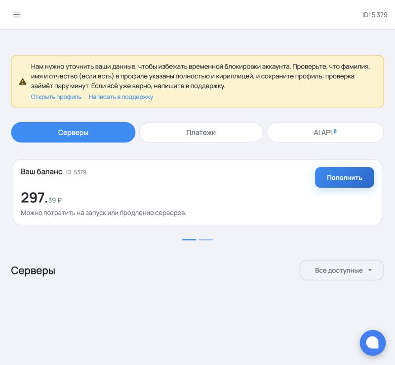
Главное правило расходов: выключайте сервер, когда он не нужен. Оплата начисляется за всё время, пока сервер включён, независимо от того, обращается ли к нему кто-нибудь. Простаивающий сервер с двумя A10 стоит столько же, сколько работающий: 85,78 ₽ в час, то есть около 2 059 ₽ в сутки, около 14 400 ₽ в неделю и около 61 800 ₽ в месяц. Сервер, забытый включённым на выходные, расходует более 5 000 ₽. Поэтому по окончании работы сервер следует остановить (раздел 11.2), а при следующей необходимости запустить снова: Strata и модель сохраняются на диске, и после запуска служба поднимается сама примерно за минуту. Рекомендуется также включить уведомления о балансе и жизненном цикле серверов в Telegram или MAX (кнопка «Включить» в личном кабинете).
Внимание. Если в верхней части кабинета показано жёлтое уведомление с просьбой уточнить данные профиля, следует открыть профиль и указать фамилию, имя и отчество полностью и кириллицей. Иначе учётная запись может быть временно заблокирована, а вместе с ней станут недоступны и работающие серверы.
На рабочем компьютере нужен только современный браузер. Для работы через программу ssh (раздел 7.2), которая удобнее веб-терминала, потому что позволяет вставлять текст из буфера обмена, используется встроенная программа: в Windows 10 и Windows 11 это PowerShell или «Терминал Windows», в macOS это программа «Терминал». Создавать ключ SSH не требуется: вход выполняется по паролю, который Intelion создаёт автоматически.
На вкладке «Серверы» нажмите «Создать сервер» (при пустом списке) или «+ Создать» (если серверы уже есть). Откроется конфигуратор GPU-сервера. В поле «Название» укажите понятное имя, например strata-2xa10; по умолчанию сайт подставляет случайное название. Тип сервера оставьте «С видеокартой», в разделе «Видеокарта (NVIDIA)» выберите «Tesla A10 - 24 Гб» (рисунок 3).
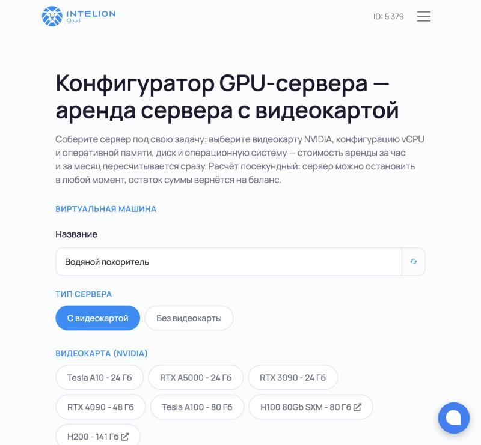
В разделе «Конфигурация» выберите вариант в соответствии с таблицей 3. Для двух видеокарт это вариант «2x Tesla A10, 48 Гб VRAM, 128 Гб DDR4, 38 vCPU» (рисунок 4). Справа от каждого варианта расположен индикатор наличия свободных машин: три зелёных деления означают, что машин достаточно, одно красное деление означает, что машин мало, а серый индикатор означает, что вариант сейчас недоступен. При дефиците вариант с двумя видеокартами может оказаться недоступен; в этом случае можно выбрать конфигурацию с одной видеокартой (раздел 4.2) или повторить попытку позднее.
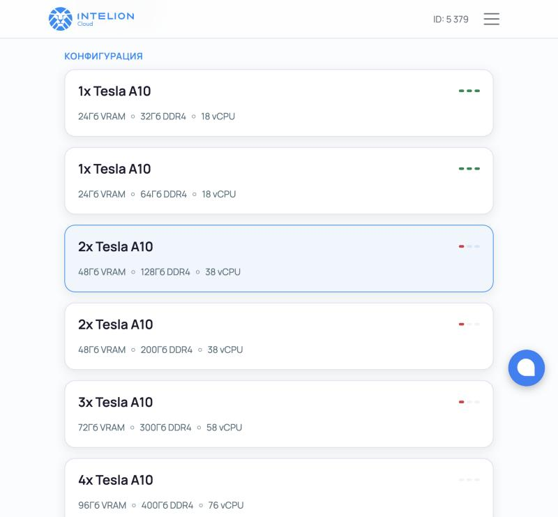
В разделе «Операционная система» выберите Ubuntu 24.04 с CUDA 13.3 (рисунок 5). Этот образ проверен: в нём уже установлены драйвер NVIDIA и CUDA Toolkit 13.3, поэтому программа установки не скачивает CUDA повторно и сразу переходит к сборке движка. Образ Ubuntu 22.04 также поддерживается. Образы Ubuntu 26.04 и Windows Server выбирать нельзя: программа установки Strata умеет автоматически ставить недостающие компоненты только на Ubuntu 22.04 и 24.04, а под Windows Server комплект не работает вовсе.
В разделе «Сетевой диск (NVMe)» задайте объём по таблице 3. Поле не принимает ввод с клавиатуры: размер меняется только кнопками «−» и «+», причём каждое нажатие «+» удваивает значение (128, 256 и так далее). Для модели Qwen3.8-Flash-Next либо для обеих моделей нажмите «+» один раз, чтобы получить 256 ГБ. Раздел «Дополнительное ПО» оставьте пустым.
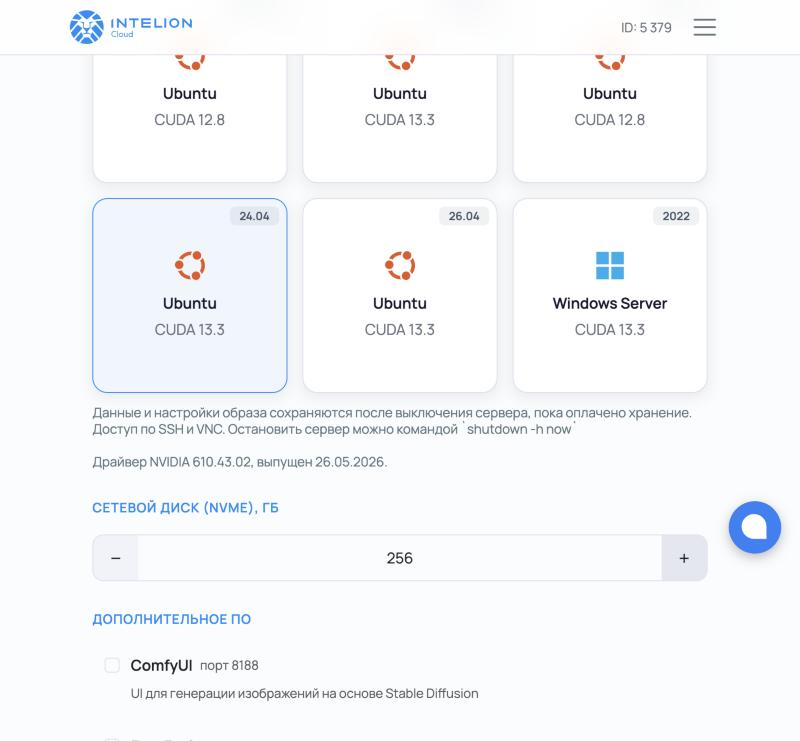
Раздел «SSH-ключ (необязательно)» можно пропустить: пароль пользователя root создаётся автоматически в любом случае, и вся дальнейшая работа выполняется с этим паролем. Добавлять ключ имеет смысл только тем, кто уже пользуется ключами SSH (рисунки 6 и 7). Если ключ добавлен, он начинает приниматься сервером не сразу, а примерно через одну-две минуты после того, как статус сервера сменится на «Работает».
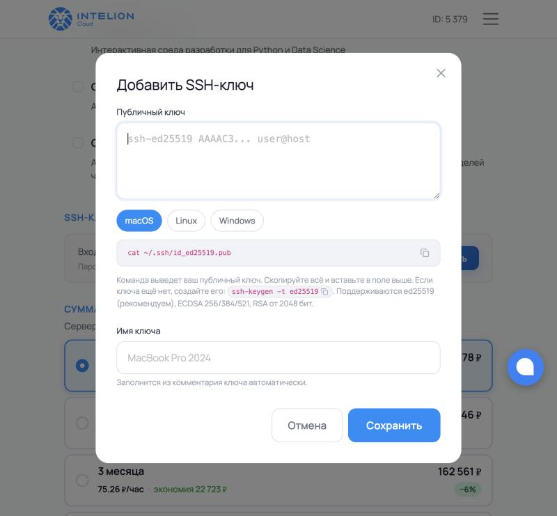
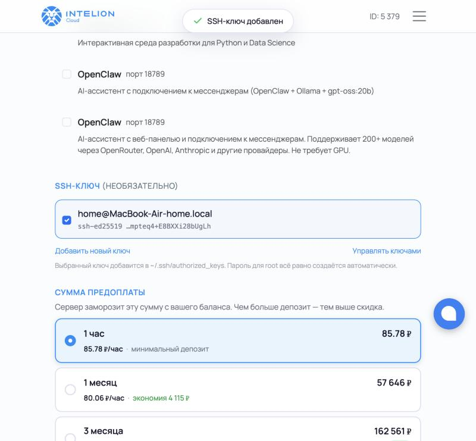
В разделе «Сумма предоплаты» оставьте вариант «1 час» (рисунок 8). Длительные периоды дают скидку от 7 до 20 процентов, но замораживают на балансе крупную сумму; их имеет смысл выбирать только для сервера, который будет работать постоянно. При досрочной остановке неизрасходованный остаток возвращается на баланс.
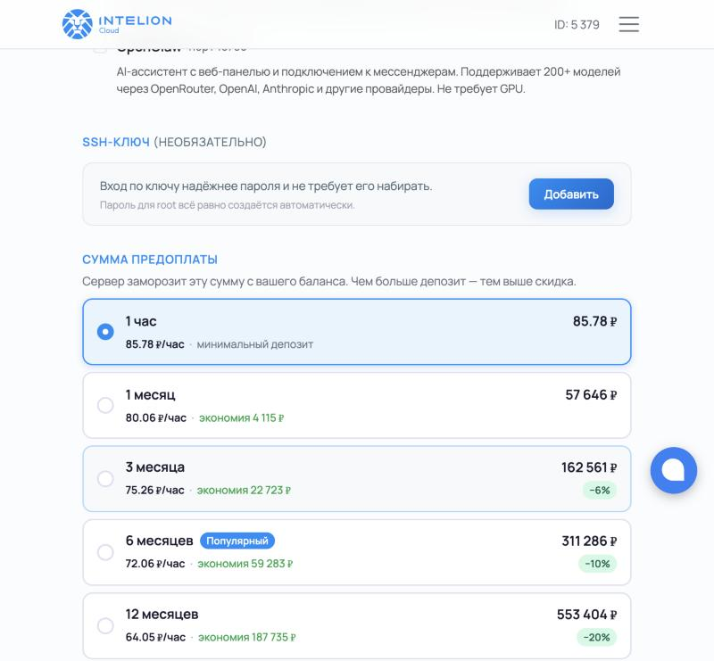
Внизу страницы проверьте итоговую стоимость (рисунок 9). Для конфигурации из рисунков 4 и 5 она составила 85,78 ₽ в час с НДС: видеокарты 54,76 ₽, процессоры 8,49 ₽, оперативная память 15,26 ₽, диск 3,84 ₽ и инфраструктура 3,49 ₽. Нажмите «Создать».
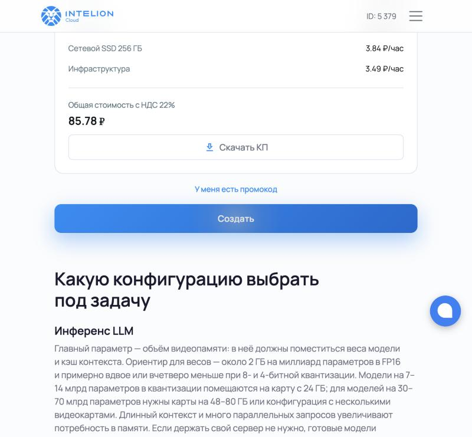
Сервер появится в списке со статусом «Ожидает запуска» (рисунок 10). Убедитесь, что переключатель «Автопродление» включён (по умолчанию он включён): без него сервер остановится через час, возможно, посреди установки. Нажмите «Запустить» и подтвердите списание в появившемся окне (рисунок 11).
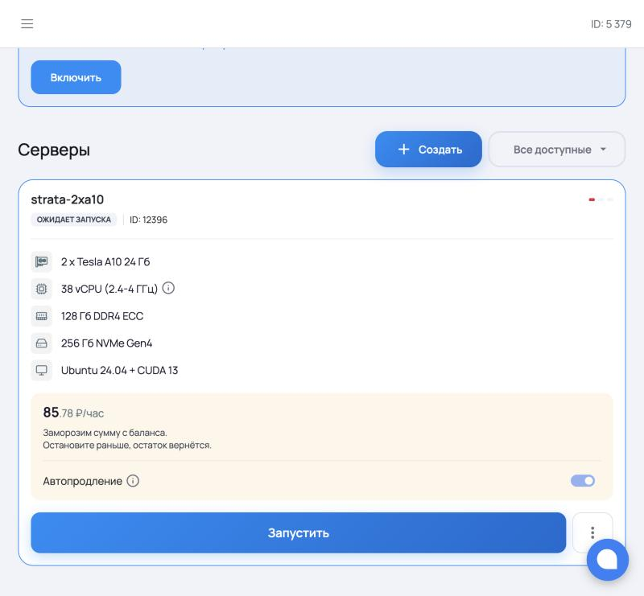
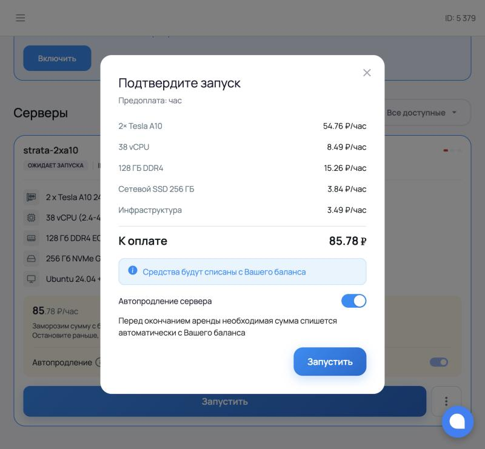
Статус сменится на «Запуск», а примерно через {{BOOT_MIN}} на «Работает»; при этом в карточке появится IP-адрес сервера (в рассматриваемом примере 185.182.108.28). Обновить статус можно кнопкой «Проверить статус» или перезагрузкой страницы.
Нажмите в карточке работающего сервера кнопку «Подключиться». Откроется окно «Подключение к серверу» (рисунок 12), в котором указаны готовая команда SSH, IP-адрес, логин root и скрытый пароль. Справа от каждого поля находится кнопка копирования. Пароль понадобится дважды: для входа на сервер и для ответа на вопрос сценария deploy.sh.
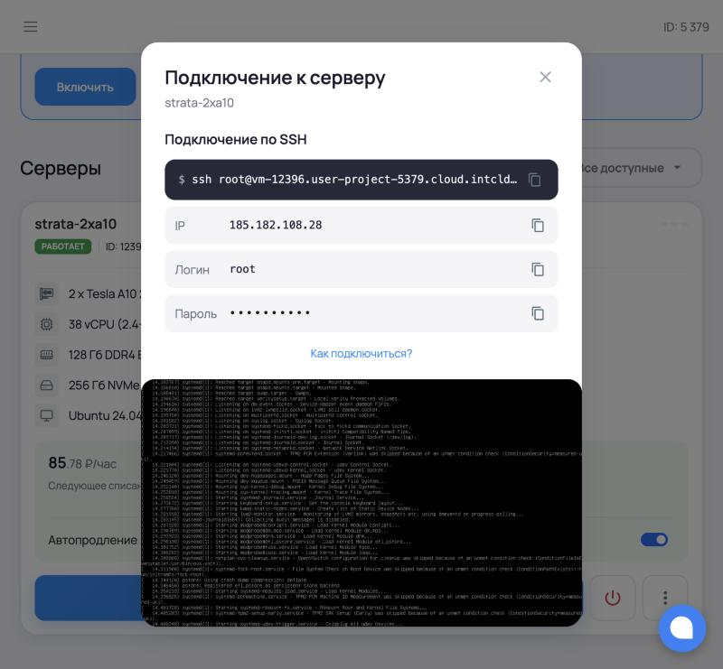
Подключиться можно одним из двух способов. Оба способа приводят к одному и тому же результату, а выбор определяется только удобством.
Нажмите «Открыть веб-терминал». В новой вкладке браузера откроется консоль сервера. На приглашение login: введите root и нажмите Enter, на приглашение Password: наберите пароль и нажмите Enter; при наборе пароль не отображается. После входа появится приветствие Intelion с данными о системе (рисунок 13), а внизу приглашение командной строки root@vm…:~#.
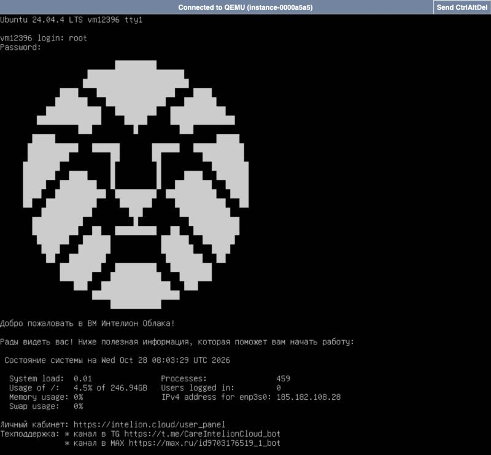
Особенность веб-терминала. Веб-терминал является консолью VNC и получает только нажатия клавиш. Вставка из буфера обмена в нём не работает, поэтому пароль и команды приходится набирать вручную, внимательно проверяя каждый символ. Раскладка клавиатуры в консоли всегда английская, кириллицу ввести нельзя: на вопросы «да/нет» отвечайте латинской буквой y (да) или n (нет) либо просто нажимайте Enter, принимая значение по умолчанию. Если окно консоли больше вкладки браузера, нижняя строка с приглашением может оказаться за краем экрана; в этом случае выполните команду clear, чтобы приглашение переместилось наверх.
В Windows откройте PowerShell (меню «Пуск», ввести «PowerShell») или «Терминал Windows», в macOS откройте программу «Терминал». Скопируйте из окна подключения команду SSH, вставьте её (в PowerShell вставка выполняется щелчком правой кнопки мыши, в macOS сочетанием Cmd+V) и нажмите Enter:
ssh root@185.182.108.28
При первом подключении программа спросит, доверять ли ключу сервера (Are you sure you want to continue connecting); ответьте yes. Затем вставьте пароль, скопированный кнопкой копирования из окна подключения, и нажмите Enter; символы пароля при этом не отображаются. Этот способ удобнее веб-терминала, поскольку команды и пароль можно вставлять из буфера обмена и тем самым исключить опечатки.
Примечание. На сервере работает защита fail2ban: после 15 неверных попыток ввода пароля в течение 10 минут адрес компьютера блокируется на один час. Если пароль не подходит, лучше скопировать его заново кнопкой копирования, чем подбирать.
Все команды этого раздела выполняются на сервере, в веб-терминале или в окне ssh из раздела 7. Сначала загрузите комплект развёртывания с GitHub, затем запустите сценарий:
git clone --branch v1.1.0 https://github.com/pro-deploy/strata_deploy.git bash strata_deploy/deploy.sh
Параметр --branch v1.1.0 означает, что загружается именно выпущенная и проверенная версия комплекта, а не текущее рабочее состояние репозитория. Git при этом выводит предупреждение You are in 'detached HEAD' state; оно ожидаемо и на работу не влияет. Репозиторий занимает около 60 МБ и загружается за несколько секунд. Сценарий запускается непосредственно на сервере и подключается по SSH к нему же, указывая его собственный IP-адрес. Так проверка API в конце развёртывания выполняется через внешний адрес, то есть тем же путём, каким к серверу будут обращаться клиенты.
Сценарий задаёт вопросы по порядку. Значение в квадратных скобках подставляется, если просто нажать Enter. Если ответ имеет неверный формат, вопрос повторяется с пояснением. Ответы приведены в таблице 7.
| Вопрос | Ответ |
|---|---|
| Адрес сервера (IPv4 или доменное имя) | IP-адрес сервера из карточки, например 185.182.108.28 |
| Порт SSH [22] | Enter |
| Пользователь [root] | Enter |
| Пароль для root@… | Пароль root из окна подключения (рисунок 12). При вводе символы не отображаются. Пароль нигде не сохраняется. |
| Выберите нейросеть [1] | 1 для Qwen3.6-35B-A3B либо 2 для Qwen3.8-Flash-Next |
| Порт API [18080] | Enter |
| С каких адресов разрешить API [все] | Enter: API доступен с любого адреса, но каждый запрос требует ключ. Чтобы пустить к API только определённых клиентов, перечислите через запятую их адреса или сети, например 203.0.113.10, 198.51.100.0/24 (раздел 13). При неверном формате вопрос повторяется. |
| Начать развёртывание? (да/нет) [да] | Enter (в веб-терминале допускается также y) |
После ввода пароля сценарий проверяет сервер и выводит его характеристики, а после выбора модели показывает профиль запуска и сводку параметров (рисунок 14). Сводку следует прочитать и убедиться, что указаны верный адрес, нужная модель и обе видеокарты.
{{FIG14}}
Протокол записан до присвоения комплекту номера версии. В версии v1.1.0 первая строка сценария дополнена словами «(комплект strata_deploy v1.1.0)», строка «Комплект» сводки имеет вид «strata_deploy v1.1.0 (коммит …)», после порта API задаётся вопрос о доступе к API (таблица 7), а сводка дополнена строками «Доступ к API» и «Защита сервера»; остальной вывод совпадает.
Если на сервере обнаружится нехватка оперативной памяти или места на диске относительно таблицы 2, либо работающие службы других нейросетей, сценарий предупредит об этом и задаст дополнительный вопрос. На новом сервере такие вопросы не появляются.
После подтверждения сценарий загружает комплект в каталог /root/strata-kit и запускает установку в фоне. Обрыв соединения или закрытие вкладки браузера установку не прерывает. Установка проходит этапы, приведённые в таблице 8; длительность каждого этапа замерена при данном развёртывании.
| № | Этап (сообщение в журнале) | Что происходит | Длительность |
|---|
{{FIG15}}
Пока движок загружает модель в оперативную память и видеокарты, порт API закрыт, а сценарий вместо журнала показывает индикатор загрузки: прошедшее время, заполнение памяти видеокарт и оперативной памяти и последнюю строку журнала службы. Обычно загрузка занимает от 3 до 15 минут. Если модель не ответит за 30 минут или служба остановится с ошибкой, сценарий покажет последние строки журнала и завершится с сообщением об ошибке (раздел 12).
В завершение сценарий обращается к API по внешнему адресу и проверяет две вещи: что модель отвечает на запрос с ключом (код HTTP 200) и что запрос без ключа отклоняется (код HTTP 401). Сразу после этого сценарий подтверждает, что межсетевой экран включён, и перечисляет, что открыто снаружи, например: «межсетевой экран включён, снаружи открыты только: SSH 22, API 18080 from anywhere». Затем сценарий предлагает показать ключ API; достаточно нажать Enter (рисунок 16).
{{FIG16}}
Ключ хранится на сервере в файле /root/strata-api.key. Посмотреть его повторно можно командой cat /root/strata-api.key. Ключ следует передавать только тем сотрудникам, которым нужен доступ к серверу.
Версия комплекта, установленного на сервере, записана в файле /opt/strata/deploy-info в строке version=. Посмотреть её можно командой:
grep version /opt/strata/deploy-info
В ответ выводится строка вида version=v1.1.0. Если вместе с номером сценарий пишет пометку -dirty или слово unknown в строке коммита, значит комплект на компьютере, с которого выполнялось развёртывание, был изменён вручную или скачан без git; в этом случае рекомендуется скачать комплект заново командой из раздела 8.1.
Чтобы перейти на новую версию, например v1.1.0, на сервере выполняются три команды. Первая загружает сведения о новых версиях, вторая переключает комплект на нужную версию, третья повторно запускает сценарий, который использует уже скачанные модель и движок и меняет только то, что изменилось:
git -C strata_deploy fetch --tags git -C strata_deploy checkout v1.1.0 bash strata_deploy/deploy.sh
Список выпущенных версий и описание изменений приведены на странице github.com/pro-deploy/strata_deploy/releases.
Адрес API имеет вид http://АДРЕС:18080/v1, ключ передаётся в заголовке Authorization: Bearer КЛЮЧ. Проверить работу можно с любого компьютера. В macOS и Linux используется команда curl:
curl -H "Authorization: Bearer КЛЮЧ" http://185.182.108.28:18080/v1/models
В Windows та же проверка выполняется в PowerShell:
Invoke-RestMethod -Uri http://185.182.108.28:18080/v1/models -Headers @{Authorization = "Bearer КЛЮЧ"}
В ответ сервер возвращает список моделей (рисунок 17). Пробный запрос к модели выполняется так:
curl http://185.182.108.28:18080/v1/chat/completions \
-H "Authorization: Bearer КЛЮЧ" -H "Content-Type: application/json" \
-d '{"model":"qwen3.6-35b-a3b","messages":[{"role":"user","content":"Привет! Ответь одним предложением."}]}'
{{FIG17}}
В клиентских программах, поддерживающих OpenAI (библиотеки openai для Python и JavaScript, LangChain, редакторы с поддержкой собственного сервера моделей), указываются три параметра: базовый адрес http://АДРЕС:18080/v1, ключ API и имя модели из таблицы 2.
Сервер нейросети работает как служба strata и запускается автоматически при включении машины. Состояние, перезапуск и журнал службы доступны стандартными командами на сервере:
systemctl status strata systemctl restart strata journalctl -u strata -f
Вывод команды systemctl status strata на рабочем сервере показан на рисунке 18: служба активна и включена в автозапуск, в ней работают общий API (server.py) и два процесса движка, по одному на каждую видеокарту, а в журнале видно, как реплики параллельно отвечают на запросы.
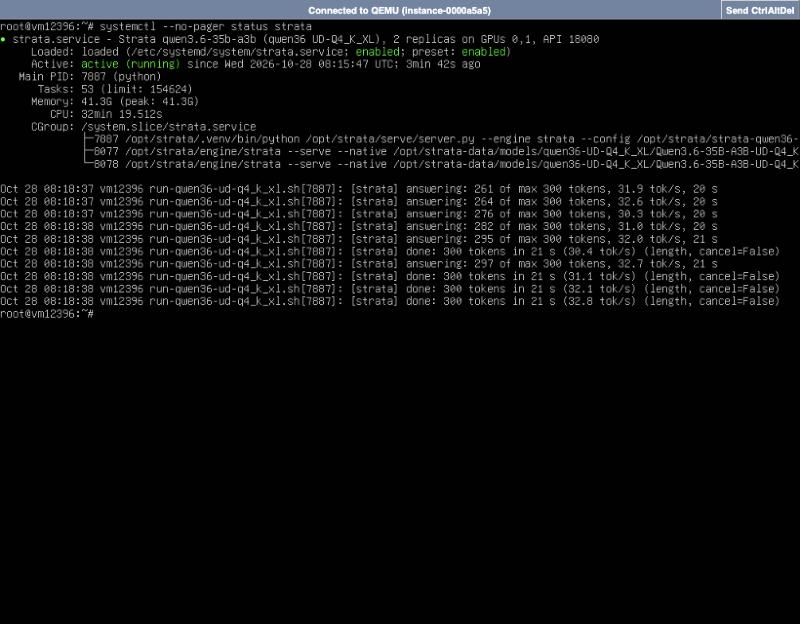
Журналы каждой реплики находятся в каталоге /opt/strata (файлы strata-<модель>.r0.log, strata-<модель>.r1.log). Загрузку видеокарт показывает команда nvidia-smi (рисунок 19): на каждой видеокарте работает процесс /opt/strata/engine/strata, занимающий около 21,9 ГиБ видеопамяти. Это нормальное состояние: движок заранее резервирует память под модель и под кэш контекста четырёх одновременных запросов.
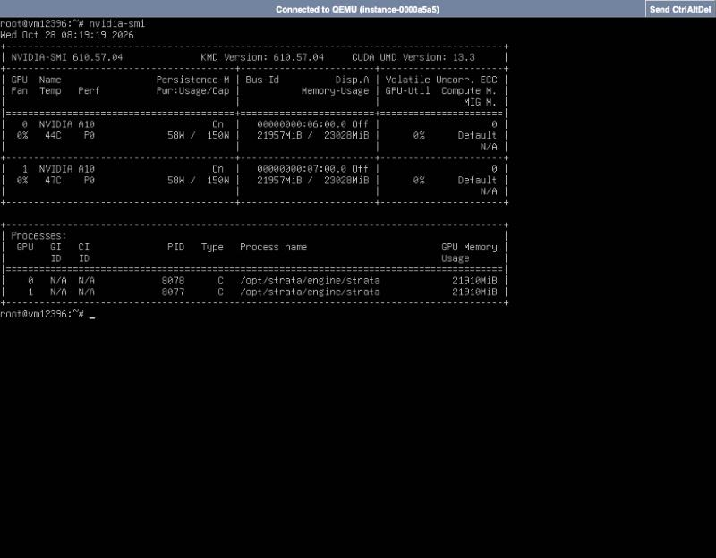
Файл /opt/strata/deploy-info (рисунок 20) содержит время развёртывания, снимок Strata, коммит комплекта, модель и число реплик. По нему всегда можно установить, какой именно код и какая модель работают на сервере.
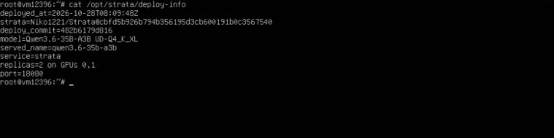
Обновления пакетов Ubuntu не перезапускают службу автоматически, чтобы не прерывать обработку запросов. После обновления системных библиотек службу нужно перезапустить вручную в удобное время.
Оплата посекундная, но предоплата списывается почасово, пока сервер работает и включено автопродление. Сервер, который не нужен, следует останавливать кнопкой выключения (значок питания) в карточке сервера. Панель запрашивает подтверждение (рисунок 21) и предупреждает о двух важных последствиях. Во-первых, оборудование освобождается: если его займут другие клиенты, запустить сервер снова получится, только когда появится свободное. При дефиците конфигураций с двумя A10 это может занять продолжительное время. Во-вторых, диск сохраняется вместе с установленными Strata и моделью: первые трое суток после остановки бесплатно, а затем за хранение списывается 5 ₽ за 1 ГБ в месяц, то есть для диска 256 ГБ около 1,78 ₽ в час или около 1280 ₽ в месяц.
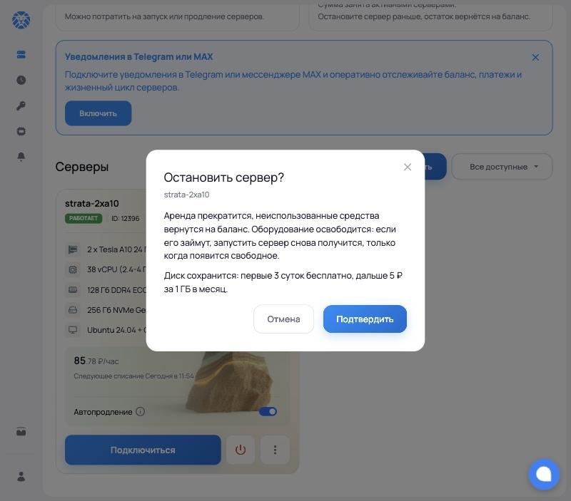
После подтверждения статус сменяется на «Останавливается», а примерно через минуту на «Приостановлен», и панель показывает итог: продолжительность работы и списанную сумму (рисунок 22). Неизрасходованный остаток предоплаты сразу возвращается на баланс. При проверке сервер проработал 42 минуты 34 секунды, за это время были выполнены развёртывание Strata и все замеры, списано 60,86 ₽, а 24,92 ₽ из оплаченного часа вернулись на баланс.
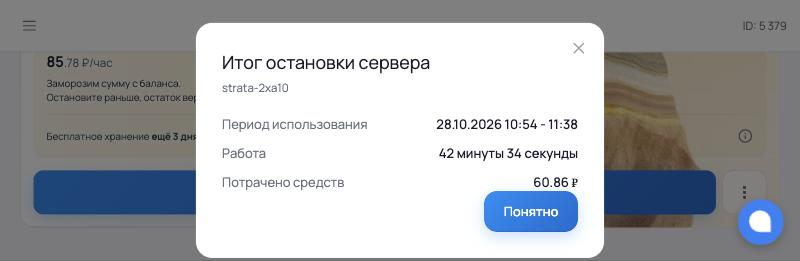
Остановка не удаляет сервер. Пока сервер не удалён, его диск сохраняется целиком: операционная система, установленный движок Strata, скачанные модели в /opt/strata-data, ключ API, служба strata и все прочие файлы. В карточке приостановленного сервера отображается кнопка «Запустить» и срок бесплатного хранения (рисунок 23). После повторного запуска служба strata стартует автоматически, модель загружается примерно за минуту, и сервер снова отвечает по тому же ключу API. Устанавливать что-либо заново не нужно. IP-адрес после повторного запуска может измениться, поэтому его следует посмотреть в карточке и сообщить пользователям.
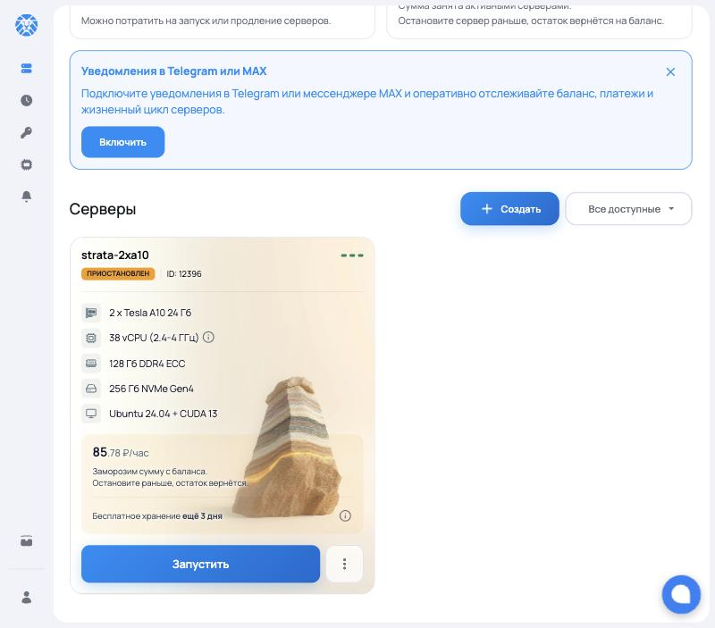
Стоимость хранения определяется только объёмом диска. Первые трое суток после остановки хранение бесплатно. Затем, по сведениям панели, закреплённое за сервером оборудование освобождается, а за хранение диска списывается 5 ₽ за 1 ГБ в месяц. Значения для расчёта приведены в таблице 10.
| Состояние сервера | Диск 128 ГБ | Диск 256 ГБ |
|---|---|---|
| Работает (в час) | 83,88 ₽ | 85,78 ₽ |
| Работает (в сутки) | около 2 013 ₽ | около 2 059 ₽ |
| Работает (месяц без перерыва) | около 60 400 ₽ | около 61 800 ₽ |
| Приостановлен, первые 3 суток | бесплатно | бесплатно |
| Приостановлен, после 3 суток (в час) | около 0,89 ₽ | 1,78 ₽ (по данным карточки) |
| Приостановлен, после 3 суток (в месяц) | около 640 ₽ | около 1 280 ₽ |
| Удалён | 0 ₽ | 0 ₽ |
Из таблицы 10 следует практическое правило. Сервер, который используется несколько часов в день, выгоднее каждый раз выключать: восемь рабочих часов в день обходятся примерно в 690 ₽, а круглосуточная работа в 2 059 ₽. Сервер, который понадобится через неделю-две, выгоднее оставить приостановленным: хранение дешевле повторной установки и бережёт время. Сервер, который больше не нужен, следует удалить через меню «⋮» в карточке. Следует учитывать, что после освобождения оборудования повторный запуск возможен только при наличии свободных видеокарт нужной модели (раздел 4.5).
Случай из практики. При подготовке инструкции тестовый сервер был запущен повторно и два часа простоял включённым в ожидании, пока к нему никто не обращался. Автопродление списало два часа аренды, всего 168,75 ₽, после чего средств на следующий час не хватило, и сервер остановился автоматически. Уже через короткое время его видеокарты занял другой клиент: в карточке появился статус «Оборудование занято» и вместо кнопки «Запустить» кнопка «Встать в очередь». Диск с установленными Strata и моделью при этом сохранился, но запустить сервер стало невозможно до освобождения оборудования. Вывод: сервер нужно останавливать сразу по окончании работы, а если он понадобится снова в течение дня, держать на балансе запас и не рассчитывать на то, что после остановки те же видеокарты останутся свободными.
Напоминание. Остановку можно выполнить и командой shutdown -h now на сервере, однако кнопка в панели надёжнее: она гарантированно прекращает почасовые списания и показывает итог. Пока сервер включён, автопродление списывает очередной час с баланса без предупреждения.
| Признак | Причина и порядок устранения |
|---|---|
| В конфигураторе нужный вариант недоступен (серый индикатор) | Свободных машин нет. Выберите другой вариант по таблице 3 или повторите попытку позднее. |
| Не удаётся ввести размер диска | Поле изменяется только кнопками «−» и «+»; каждое нажатие «+» удваивает объём. |
| Вход по ключу SSH отклоняется сразу после запуска | Ключ записывается на сервер в течение одной-двух минут после появления статуса «Работает». Подождите и повторите попытку. |
| В веб-терминале не вставляется пароль или команда | Консоль VNC не поддерживает вставку. Наберите текст вручную либо подключитесь через ssh (раздел 7.2). |
| В веб-терминале не вводится «да» | Консоль работает только в английской раскладке. Ответьте y или нажмите Enter. |
| «Не удалось войти … по паролю» | Пароль введён с ошибкой. Скопируйте его заново из окна подключения. После 15 неудачных попыток за 10 минут адрес блокируется на час. |
| Сценарий завершился с ошибкой, а установка уже шла | Посмотрите журнал командой tail -n 100 /root/strata-kit/install.log. Повторный запуск bash strata_deploy/deploy.sh безопасен: окружение, движок, модель и ключ используются повторно. |
| Нажато Ctrl+C во время показа журнала | Прерван только показ, установка продолжается. Следить за ней можно командой tail -f /root/strata-kit/install.log. |
| Запрос к API возвращает 401 | Не передан или неверно указан ключ. Проверьте заголовок Authorization: Bearer КЛЮЧ. |
| Запрос к API отклоняется из-за имени модели | В поле model указано неверное имя. Используйте имя из таблицы 2. |
| Сервер внезапно остановился | Закончились средства на балансе или было отключено автопродление. Пополните баланс и запустите сервер; служба strata запустится автоматически. |
Начиная с версии v1.1.0 сценарий deploy.sh при каждой установке приводит сервер в защищённое состояние, и никаких отдельных действий для этого не требуется. В итоге получается сервер, у которого наружу открыт только программный интерфейс по ключу. Сценарий выполняет следующее.
Включает межсетевой экран ufw с правилом «запрещено всё, что не разрешено явно». Снаружи остаются доступны только порты SSH, которые реально слушает сервер (их сценарий определяет сам, поэтому доступ к серверу не теряется даже у провайдера с нестандартным портом), и порт API. Все прочие службы образа, например экспортёр метрик node_exporter, становятся недоступны из интернета.
Открывает порт API либо для всех адресов, либо только для перечисленных в ответе на вопрос «С каких адресов разрешить API» (таблица 7). В режиме ограничения сценарий дополнительно пропускает адрес, с которого выполняется развёртывание, чтобы завершающая проверка API прошла успешно.
Устанавливает fail2ban, если его нет на сервере: после нескольких неверных паролей SSH адрес блокируется. В образах Intelion fail2ban уже установлен и настроен.
Сохраняет ключ API в файле /root/strata-api.key и конфигурацию запуска с правами доступа только для root. Запросы к модели, настройки, метрики и управление Strata без ключа отклоняются с кодом HTTP 401; без ключа доступны только проверка состояния /health и стартовая страница.
Правила комплекта помечены в ufw комментарием strata и пересоздаются при каждом запуске сценария. Правила, добавленные администратором вручную, сценарий не изменяет. Текущее состояние межсетевого экрана показывает команда:
ufw status
Работа защиты проверена на стенде из контейнеров Ubuntu 24.04 (каталог tests/firewall репозитория): в режиме «все» снаружи доступны только SSH и API, в режиме ограничения API доступен только перечисленным адресам при сохранении SSH для всех, повторный запуск не размножает правила, а ручные правила администратора сохраняются. На сервере Intelion версия v1.1.0 ещё не проверялась, поскольку оборудование тестового сервера к моменту проверки было занято другим клиентом.
Чтобы открыть API для нового клиента или, наоборот, снять ограничение, достаточно повторно запустить bash strata_deploy/deploy.sh и ответить на вопрос о доступе новым списком адресов или словом «все». Модель и движок при этом используются повторно, а правила межсетевого экрана пересоздаются за несколько секунд. Если на сервере нужен ещё какой-либо порт, его открывают вручную командой ufw allow НОМЕР/tcp; такое правило сохраняется при повторных запусках сценария.
Пароль root и ключ API являются секретными сведениями. Их не следует пересылать в мессенджерах, публиковать в общих документах и записывать в исходный код программ; ключ API рекомендуется хранить в переменных окружения или в хранилище секретов. Если пароль root мог стать известен посторонним, его следует сменить командой passwd на сервере.
Если ключ API скомпрометирован, удалите файл /root/strata-api.key и повторно запустите bash strata_deploy/deploy.sh: сценарий создаст новый ключ, а модель и движок будут использованы повторно. После этого новый ключ нужно передать всем клиентам.